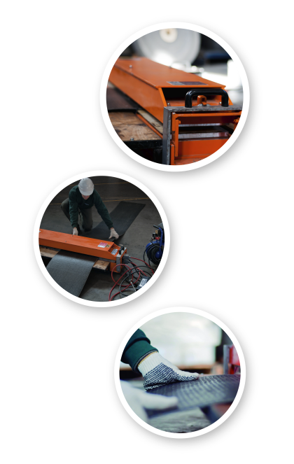

EMPALMES
Realizamosempalmes de cintas transportadoras en campo y en nustras instalaciones. El procedimiento que utilizamos se adecua a la tecnologuía de fabricación de nuestras correas. El mismo es realizado con prensas de última generación con controles precisos de temperaturay presión. Se utiliza el sistema de "Doble zeta" con aporte de PVC y PU, con lo cual se logra una unión flexible y de extrema durabilidad. Otras de sus principales caracteristicas, es el hecho de poder comenzar a tilizar la correa empleada inmediatamente después de terminado el procedimiento, logrando unahorro sustancial de tiempo.